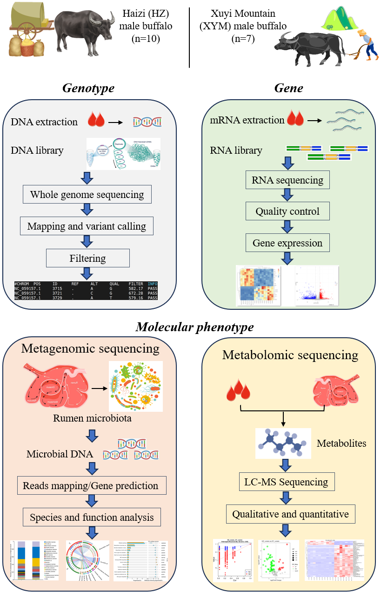

We are delighted to have you here! Explore the comprehensive analysis results of genotype, gene expression, and molecular phenotype of HZ and XY buffalo. We are eager to connect with fellow scientists interested in our project. If you have any questions, please feel free to contact us. Thank you!
